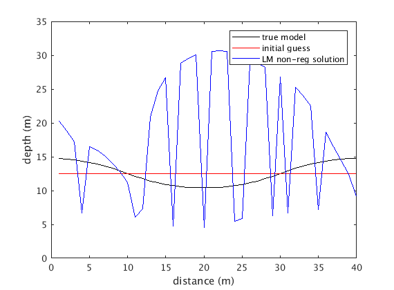
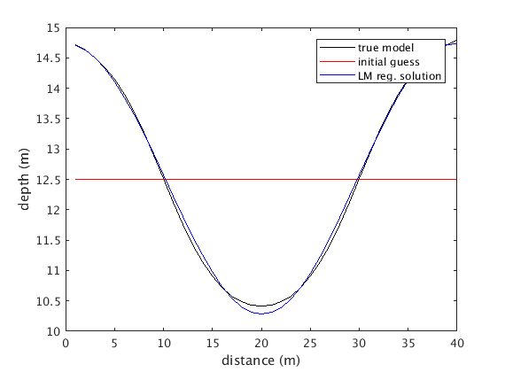

Contents
% Paula Burgi % Midterm 2, Problem 2 %clear % close all
Part a - generate gravity data
parameters
n = 40; m = 40; L = 40; hs = sym('hs'); xs = sym('xs'); sn = linspace(1,40,n)'; xn = linspace(1,40,n)'; % function that represents real pipe height (data) h1 = (2.*pi.*(xn-(L./4)))./L; h2 = (2.*pi.*(xn-((3.*L)./4)))./L; h = 15 - (5./2).*tanh(h1) + (5/2).*tanh(h2); % functional form of data df = hs./(((sn-xs).^2 + hs.^2).^(3/2)); % turn integral into sum in gravity equation % sum over all x's a d symbolic variables hsi d_all = []; for i = 1:m % add 0 if i=1-9 so symvar puts in correct order if i < 10 hsi = ['hs0' num2str(i)]; else hsi = ['hs' num2str(i)]; end % create symbolic variable for each hieght estimate sym(hsi); % substitute x and hs into gravity equation and sum di = subs(df, hs, hsi); di = subs(di, xs, i); if i == 1 d_all = di; else d_all = d_all+di; end end % generate gravity anomaly data for i = 1:m % add 0 if i=1-9 so symvar puts in correct order if i < 10 hsi = ['hs0' num2str(i)]; else hsi = ['hs' num2str(i)]; end % let each height variable equal result from given function evalc([hsi '=' num2str(h(i))]); end % evaluate gravity function after above for-loop assigned values to each % symbolic variable hsi s.t. they are equal to result from equation 1.25 dnn = eval(subs(d_all)); % add 1% noise st = max(dnn).*0.01; dn = dnn + randn(40,1).*st;
Part b - use LM subroutine to find height of pipe
calculate covar matrix
Cd = eye(m).*(st^2); Cdi = inv(sqrt(Cd)); % calculate residual function f to go in LM code f = Cdi*(d_all - dn); % calculate Jacobian J = []; for i = 1:m % add 0 if i=1-9 so symvar puts in correct order if i < 10 hsi = ['hs0' num2str(i)]; else hsi = ['hs' num2str(i)]; end % add column to jacobian with derivative wrt each hieght variable hsi Ji = diff(f, hsi); J = [J Ji]; end % initial guess %var0 = h - 1; var0 = ones(n,1).*12.5; % convergence criteria ep = 1e-2; % find height values using LM code [varf, k, Cm, X2] = LMLSQ(f, var0, J, ep); varf = varf'; disp(['Number of iterations to convergence (non-reg): ' num2str(k)]);
Number of iterations to convergence (non-reg): 100
Part c - plot non-regularized results & chi^2
figure; hold on; box on; plot(xn, h, 'k'); plot(xn, var0, 'r'); plot(xn, varf, 'b'); xlabel('distance (m)'); ylabel('depth (m)'); legend('true model', 'initial guess', 'LM non-reg solution'); p_value = chi2cdf(X2,m-n, 'upper') % The p-value for the the non-regularized result is 0. This implies that it % is outside the limits of a good p-value.
p_value =
0
 Part d - Regularization
alpha (regularization weighting)
ai = 121; %1:10:500; varfra = []; for j = 1:length(ai) a = ai(j); % 2nd order Tikhonov matrix L = [-2 1 zeros(1, n-3) 1; diff(diff(eye(n)));1 zeros(1, n-3) 1 -2];%.*(1/(dn.^2)); for i = 1:m if i < 10 hsi = ['hs0' num2str(i)]; else hsi = ['hs' num2str(i)]; end evalc([hsi '=' num2str(var0(i))]); end d0 = eval(subs(d_all)); dxx = ones(m,1); % augment residual function and jacobian fa = [f; a.*L*var0]; K = [J; a.*L]; % calculate model [varfr, k, Cm, X2r] = LMLSQ(fa, var0, K, ep); varfra = [varfra varfr']; end disp(['choice of alpha: ' num2str(a)]); disp(['Number of iterations to convergence (reg): ' num2str(k)]);
choice of alpha: 121 Number of iterations to convergence (reg): 9
Part e - calculate chi^2
% plot figure; hold on; box on; plot(xn, h, 'k'); plot(xn, var0, 'r'); plot(xn, varfra, 'b'); xlabel('distance (m)'); ylabel('depth (m)'); legend('true model', 'initial guess', 'LM reg. solution'); % calculate chi^2 p_value = chi2cdf(X2r,n, 'upper') % with regularization (where DOF = n), the p-value is ~0.96, which means % the results are acceptable.
p_value =
0.9835
